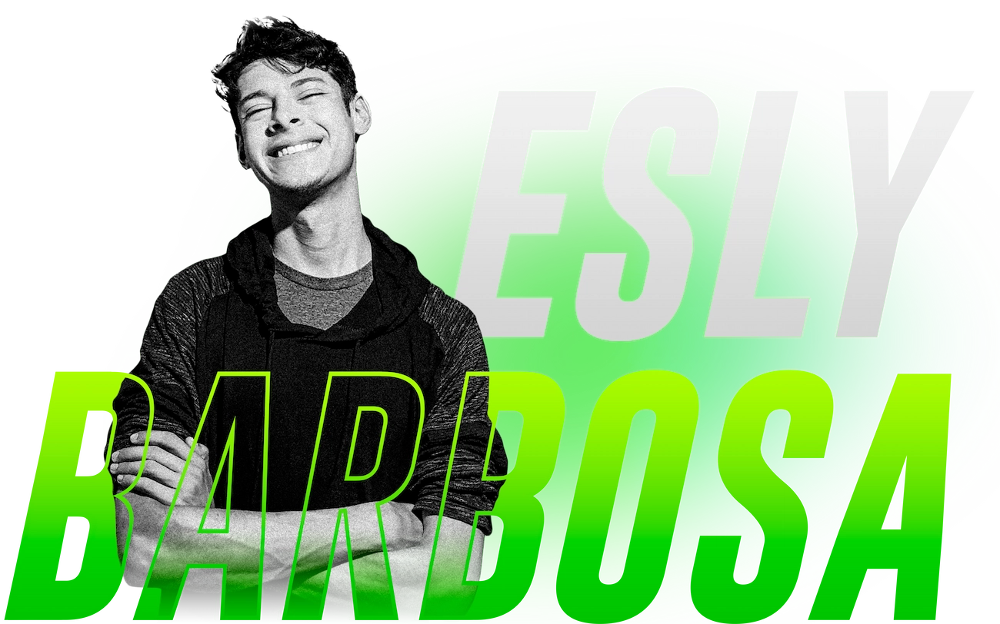
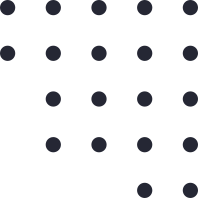

Desenvolvedor Front end, UX/UI Designer, Web Designer
Localizado em São Paulo. 👨💻


Sou Front end e trabalho com desenvolvimento web e mídia impressa. Gosto de transformar problemas complexos em designs simples, bonitos e intuitivos.
Meu trabalho é construir o seu site de forma que seja funcional e fácil de usar, mas ao mesmo tempo atraente. Além disso, adiciono um toque pessoal ao seu produto e garanto que ele seja atraente e fácil de usar. Meu objetivo é transmitir sua mensagem e identidade da maneira mais criativa.